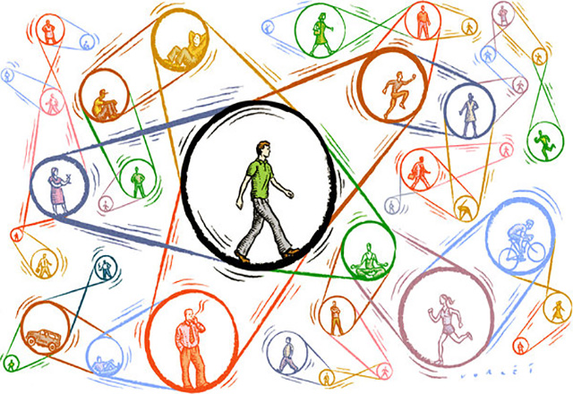

Кросс-культурная психология (англ. cross-cultural psychology) — область психологии, занимающаяся изучением закономерностей развития и функционирования психики в контексте обусловленности её формирования социальными, культурными и экологическими факторами. Кросс-культурная психология занимается выявлением как универсальных, так и специфических особенностей психического развития, а также описывающих их теорий.
Поскольку психология в качестве академической дисциплины была разработана преимущественно в Северной Америке, некоторые психологи посчитали, что концепции, принятые в качестве универсальных, не были так однозначны, как предполагалось ранее. Кросс-культурная психология отличается от культурной психологии, которая утверждает, что на поведение человека в значительной степени влияют культурные особенности, подразумевая тем самым, что психологию носителей разных культур можно сравнить лишь в ограниченной степени. В задачи кросс—культурной психологии входит поиск возможных универсалий в поведении и ментальных процессах в различных культурах.
До 60-х гг. XX века кросс-культурные психологические исследования носили эпизодический характер и чаще всего являлись частью антропологических исследований. Кросс-культурная психология получила широкое распространение в последней четверти XX века в связи с развитием глобализационных процессов.
В 1972 году была создана Международная ассоциация кросс-культурной психологии. Кросс-культурная психология продолжает развиваться, с одной стороны, благодаря росту научного интереса к культурному разнообразию и необходимости взаимодействия культур и, с другой стороны, из-за проявившегося желания народов сохранить свою культурную идентичность.